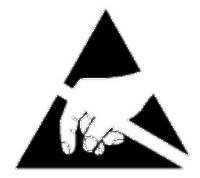
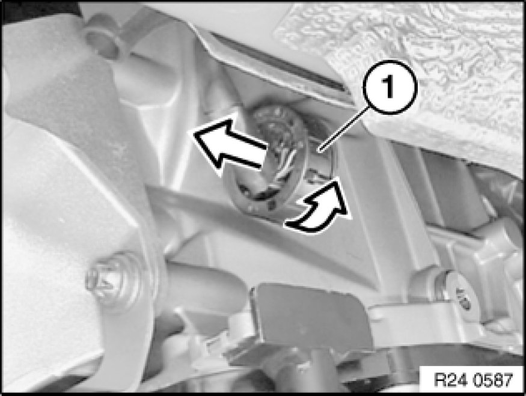

Procedures
24 34 561 - Notes on mechatronics (GA6L45R)

Special tools required:
- 24 2 390 24 2 390 Covering Cap

Important!
After completing work:
- Load specific data version with DIS
- Check transmission fluid level Procedures
Use only approved transmission fluid.
Failure to comply with this requirement will result in serious damage to the automatic transmission!

Important!
Read and comply with notes on protection against electrostatic damage (ESD protection) 61 35 ... Notes on ESD Protection (Electro Static Discharge).

Unscrew plug (1) and disconnect.

Insert special tool 24 2 390 24 2 390 Covering Cap in sealing sleeve (1).